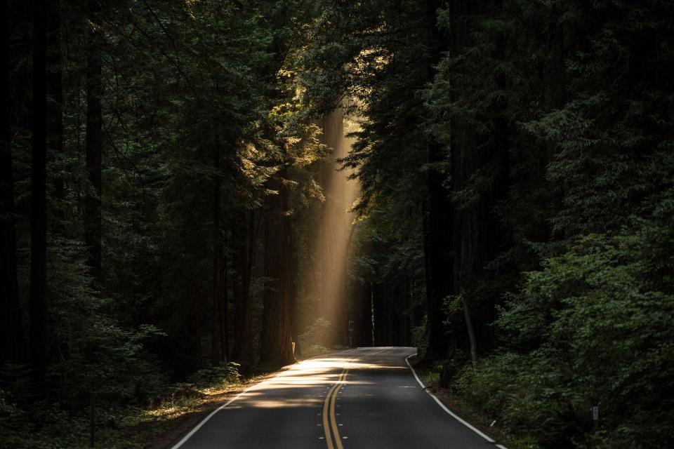
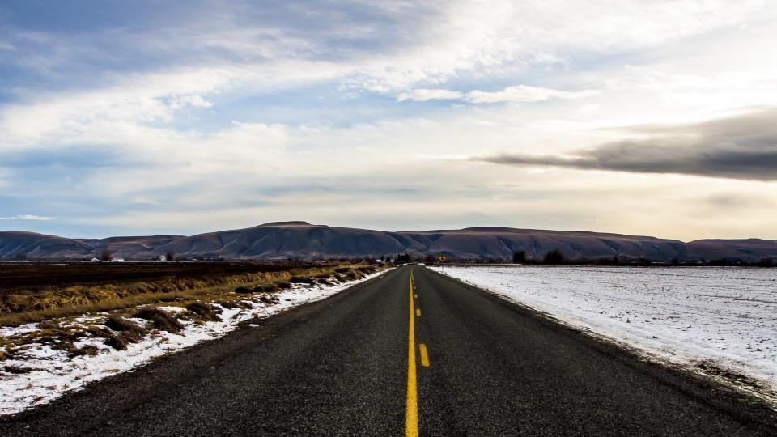

Det är okej att vara rädd för att köra
Lugna lektioner på 60 minuter i Umeå för dig med körångest, adhd, autism eller dyslexi. Vi kör i lugna områden tills du själv vill vidare.

Fyra personer, en bil i taget
Malin Sjölund arbetade som specialpedagog på en gymnasieskola i Umeå i femton år och såg elev efter elev ge upp körkortet efter ett par stressiga lektioner. 2018 utbildade hon sig till trafiklärare och startade Lugna Vägen tillsammans med Erik Lindgren, som undervisat i trafik sedan 2004.
Ingen ska behöva ge upp körkortet
Körkort är ofta skillnaden mellan att få ett jobb eller inte, särskilt i Västerbotten. Därför tar vi bara så många elever att varje lärare hinner förbereda lektionen, och vi höjer aldrig rösten i bilen.
- 25elever per lärare, inte fler
- 100 %lektioner med plan i förväg
- 0lektioner i rusningstrafik innan du vill

Känner du igen dig?

Trafiklärare som har tålamod
Vi söker en femte trafiklärare på deltid, gärna med erfarenhet från skola, vård eller LSS. Du får färre elever än på en vanlig skola och betald NPF-kurs första året.
Varje elev får skriva ner tre saker som gör hen nervös i bilen – och vi läser dem före varje lektion.
Du bestämmer tempot
- 1

Ett samtal först
Du ringer eller mejlar Malin. Vi pratar om vad som är svårt – du behöver inte bestämma något.
- 2

Prova-lektion
45 minuter på en tom parkering, med din blivande lärare.
- 3

En plan i små steg
Varje lektion har ett mål som du får veta i förväg. Vi går vidare när du är redo.
- 4

Trygg inför provet
Provlektioner, genomgång av provsträckor och hjälp med anpassat prov hos Trafikverket.
Behöriga och utbildade i NPF
- Godkänd trafikskolaTransportstyrelsens tillstånd att utbilda för B-körkort, sedan 2018.
- RiskutbildningGodkända att hålla riskettan, med halkbanan på godkänd bana i Umeå.
- NPF-utbildade lärareAlla fyra lärare har läst högskolekurs om neuropsykiatriska funktionsnedsättningar, 7,5 hp.
- Medlem i STRMedlem i Sveriges Trafikutbildares Riksförbund sedan starten 2018.

Lärarna du kommer att träffa
- Grundare och specialpedagogMalin SjölundTar emot de flesta elever med körångest och NPF och håller i teorin med stöd.

- Delägare, trafiklärareErik LindgrenKör provlektioner och tar hand om elever som ska göra om körprovet.

- TrafiklärareSofie och ArvidSofie har automateleverna och Arvid de flesta riskettorna i liten grupp.

Kommuner och skolor vi samarbetar med
- Pågående

Umeå kommun, LSS
Körkort för fem unga vuxna med stöd från kommunens LSS-verksamhet.
- Utfört

Ersboda folkhögskola
Teorikurs med bildstöd för tolv deltagare på en allmän kurs.
- Utfört

Vännäs kommun
Två riskettor med fyra deltagare var för ungdomar i kommunens jobbprogram.
- Utfört

Föräldrakvällar
Fyra kvällar om att övningsköra med en nervös elev, 30 föräldrar per gång.
- Utfört

Holmsunds Bygg
Två anställda som behövde köra i jobbet fick lektioner på arbetstid.
- Utfört

Brf Tomtebogård
En lördag med prova-lektioner på föreningens parkering.